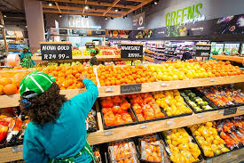
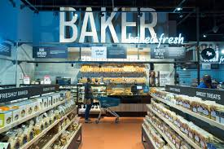

Checkers is a self-service shop offering a wide variety of food, beverages and household products, organized into sections. This kind of store is larger and has a wider selection than earlier grocery stores, but is smaller and more limited in the range of merchandise than a hypermarket or big-box market. In everyday U.S. usage, however, "grocery store" is synonymous with supermarket,[1] and is not used to refer to other types of stores that sell groceries.
Checkers typically has places for fresh meat, fresh produce, dairy, deli items, baked goods, etc. Shelf space is also reserved for canned and packaged goods and for various non-food items such as kitchenware, household cleaners, pharmacy products and pet supplies. Some supermarkets also sell other household products that are consumed regularly, such as alcohol (where permitted), medicine, and clothing, and some sell a much wider range of non-food products: DVDs, sporting equipment, board games, and seasonal items
 